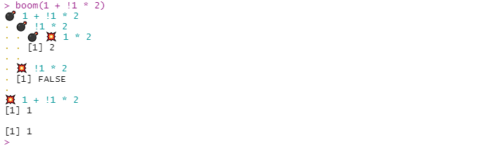
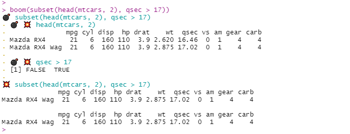
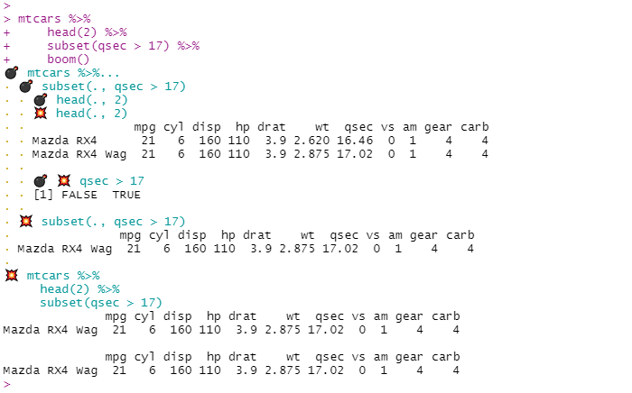
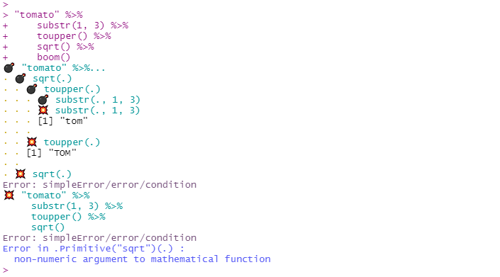
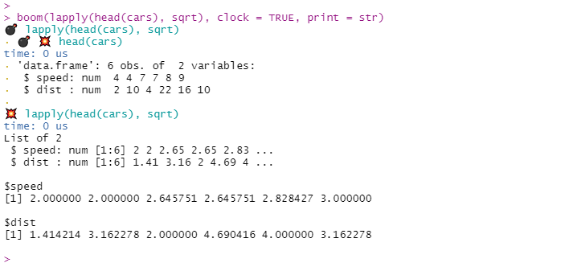
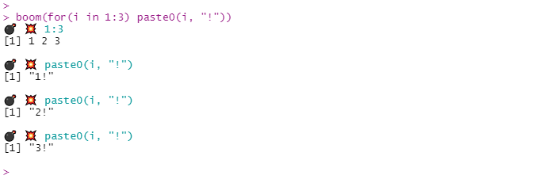
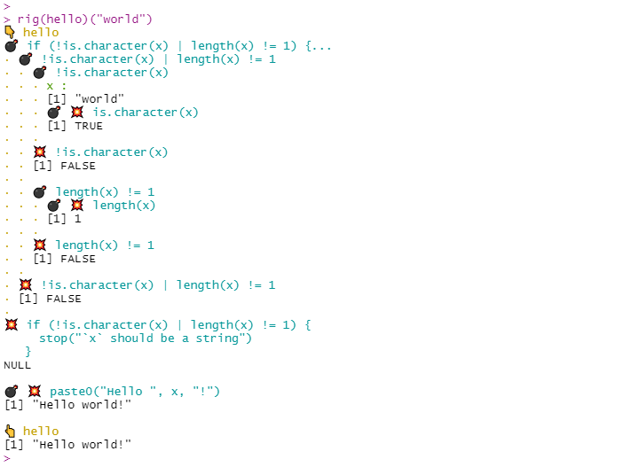
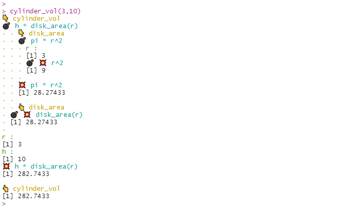
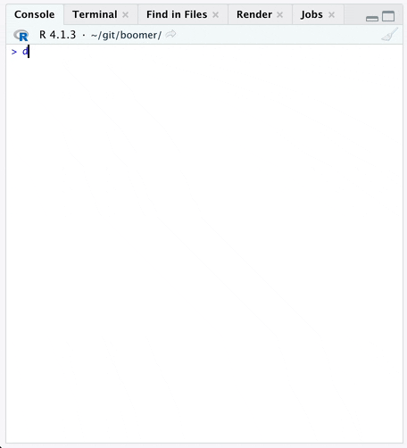
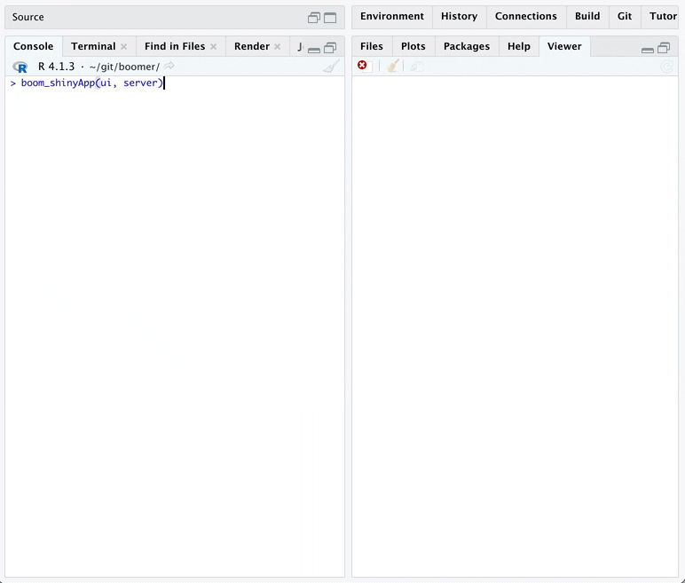

The {boomer} package provides debugging tools that let you inspect the intermediate results of a call. The output looks as if we explode a call into its parts hence the name.
-
boom()prints the intermediate results of a call or a code chunk. -
rig()creates a copy of a function which will display the intermediate results of all the calls of it body. -
rig_in_namespace()rigs a namespaced function in place, so its always verbose even when called by other existing functions. It is especially handy for package development.
Installation
Install CRAN version with:
install.packages("boomer")Or development version with:
remotes::install_github("moodymudskipper/boomer")
boom()


You can use boom() with {magrittr} pipes or base R pipes: just pipe to boom() at the end of a pipe chain.

If a call fails, {boomer} will print intermediate outputs up to the occurrence of the error, it can help with debugging:

boom() features optional arguments :
clock: set toTRUEto see how long each step (in isolation!) took to run.print: set to a function such asstrto change what is printed (see?boomto see how to print differently depending on class). Useful alternatives would bedplyr::glimpseofinvisible(to print nothing).
One use case is when the output is too long.

boom() also works works on loops and multi-line expression.

rig()
rig() a function in order to boom() its body, its arguments are printed by default when they’re evaluated.
hello <- function(x) {
if(!is.character(x) | length(x) != 1) {
stop("`x` should be a string")
}
paste0("Hello ", x, "!")
}
rig(hello)("world")
rig_in_namespace()
rig() creates a copy of a function, but when developing a package we might want to rig a function in place so it has a verbose output when called by other functions. For this we can use rig_in_namespace().
For instance you might have these functions in a package :
cylinder_vol <- function(r, h) {
h * disk_area(r)
}
disk_area <- function(r) {
pi * r^2
}cylinder_vol depends on disk_area, call devtools::load_all() then rig_in_namespace() on both and enjoy the detailed output:
devtools::load_all()
rig_in_namespace(cylinder_vol, disk_area)
cylinder_vol(3,10)
boom_on() and boom_off()
While debugging a function, call boom_on() and all subsequent calls will be boomed, call boom_off() to return to standard debugging.

boom_shinyApp()
A very experimental feature that allows you to rig the reactives of a shiny app. See vignette("shiny", "boomer") for more information.
For the following app, saved in a proper project/package:
histogramUI <- function(id) {
tagList(
selectInput(NS(id, "var"), "Variable", choices = names(mtcars)),
numericInput(NS(id, "bins"), "bins", value = 10, min = 1),
plotOutput(NS(id, "hist"))
)
}
histogramServer <- function(id) {
moduleServer(id, function(input, output, session) {
data <- reactive(mtcars[[input$var]])
output$hist <- renderPlot({
hist(data(), breaks = input$bins, main = input$var)
}, res = 96)
})
}
ui <- fluidPage(
histogramUI("hist1")
)
server <- function(input, output, session) {
histogramServer("hist1")
}The output of boom_shinyApp(ui, server) will look like:

There will be issues, please report!
Addin
To avoid typing boom() all the time you can use the provided addin named “Explode a call with boom()”: just attribute a key combination to it (I use ctrl+shift+alt+B on windows), select the call you’d like to explode and fire away!
Options
Several options are proposed to weak he printed output of {boomer}’s functions and addin, see ?boomer to learn about them.
In particular on some operating systems {boomer}’s functions’ output might not always look good in markdown report or reprexes. It’s due to how he system handles UTF-8 characters. In this case one can use options(boomer.safe_print = TRUE) for a more satisfactory input.
Notes
{boomer} prints the output of intermediate steps as they are executed, and thus doesn’t say anything about what isn’t executed, it is in contrast with functions like lobstr::ast() which return the parse tree.
Thanks to @data_question for suggesting the name {boomer} on twitter.